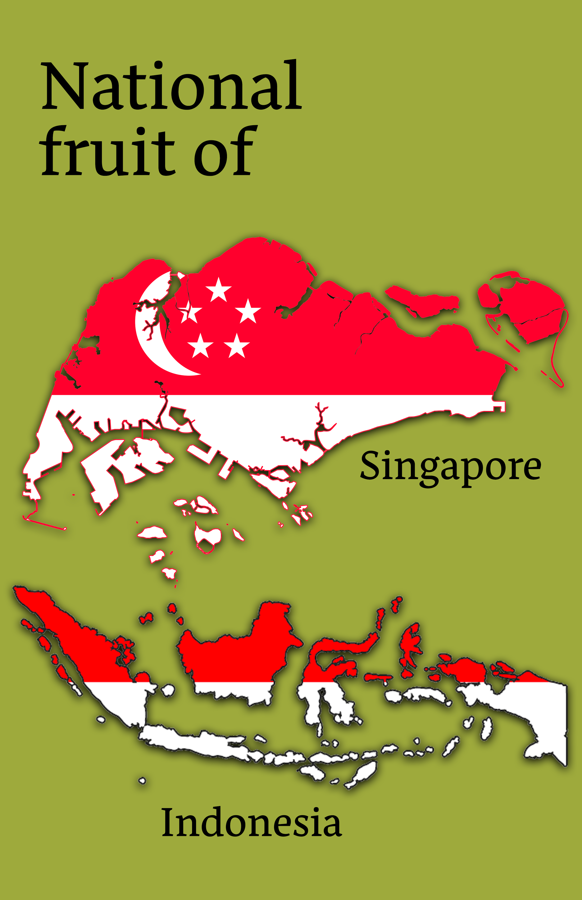
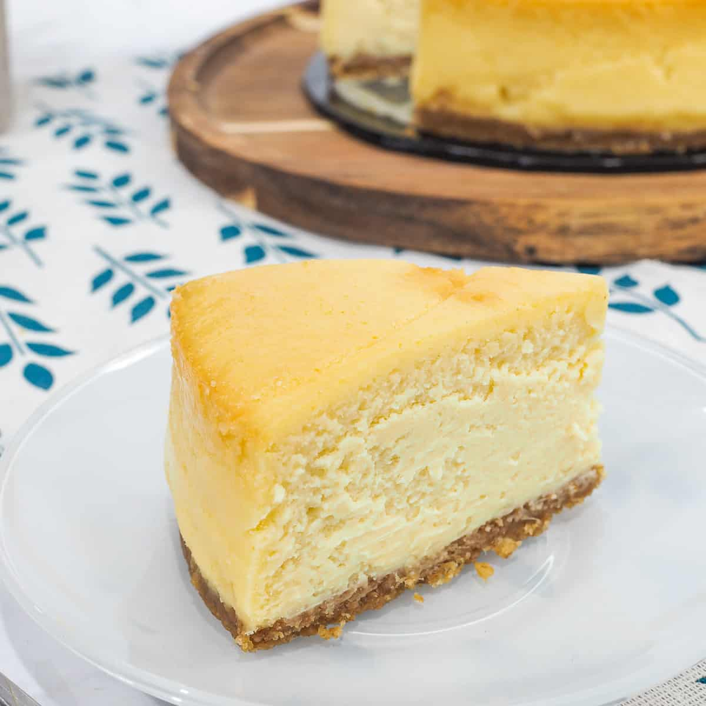
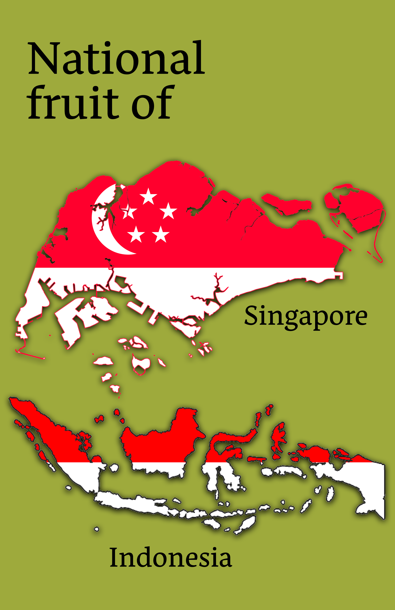
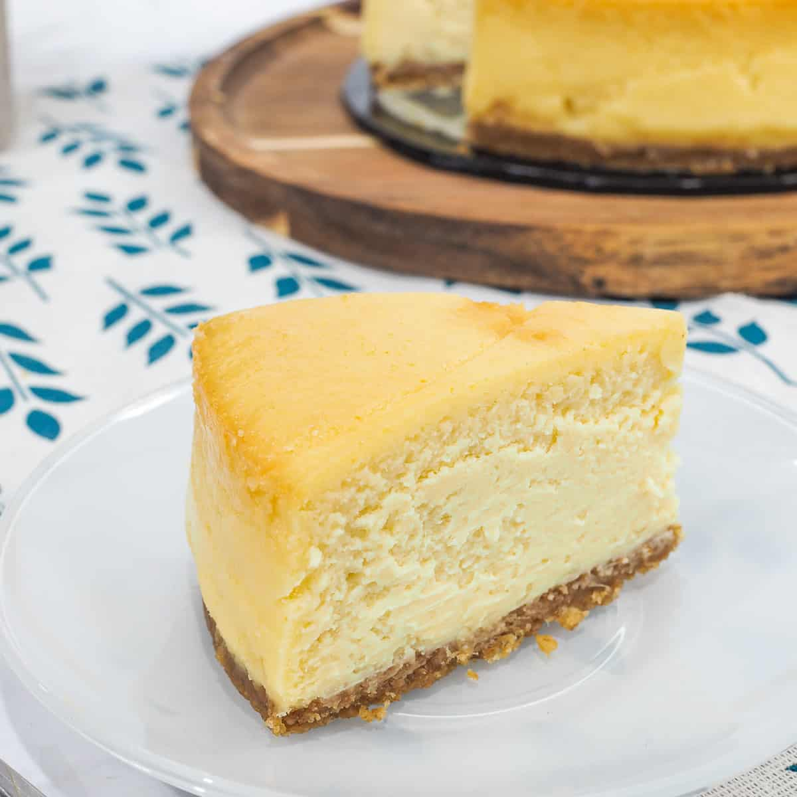

The
Durian
Durian is a tropical fruit that is native to Southeast Asia, known for its
distinctively
strong and pungent odor. The fruit is large and spiky with a
green or brown exterior,
and a creamy yellow or orange flesh inside. Durian
is considered a delicacy in
many parts of Asia, and is used in a variety of
dishes such as ice cream, desserts,
and candy. Despite its popularity, the
fruit's strong odor has led it to be banned from
certain public spaces such
as hotels and public transportation. Durian is high in fiber,
vitamin C, and
potassium, and is also a good source of other essential nutrients. It
has a
unique taste and texture, often described as sweet, creamy, and custard-like,
with a slightly bitter aftertaste.
Durian Cheesecake
Recipe
(click image)
 


